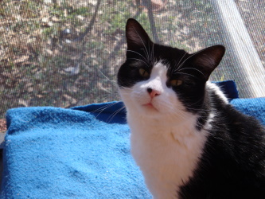
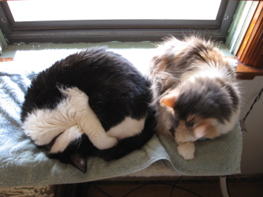
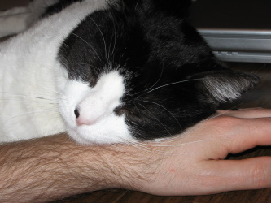
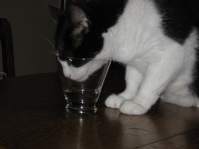

Cat-A-Log Item: Speaker
Speaker was our third cat. Stopping by PetSmart for cat food I wondered over to the adoption center. Speaker stood out from the rest of the cats there. I called Jenn and asked if she'd like to make a trip to Mobile, AL that weekend with the intent of bringing him home.
An aptly named cat if ever there was one, Speaker spoke frequently. Random vocalizations at high volume were common; moreso as he aged.
Speaker was one of the most affectionate cats I've ever encountered. He would sleep on your lap, your arm, or chest. He would allow you to pet or groom him for extended lengths and welcomed attention.



